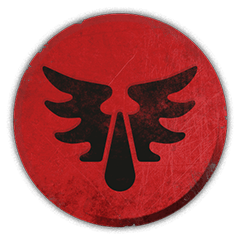
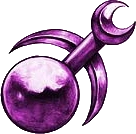

Signus Campaign
| Signus Campaign | |
|---|---|
| Part of the opening of the Horus Heresy | |
 Sanguinius and the Bloodthirster Ka'Bandha above Signus Prime | |
| Date | c. 005–006.M31 |
| Location | Signus Cluster, a trinary system of seven worlds and fifteen moons, Segmentum Ultima |
| Result | Cluster purged and declared Mortae Perpetua (forever dead). Sanguinius survived. The Blood Angels' Red Thirst revealed to the whole Legion. A daemon of the Blood Angels' own making, the Red Angel, delivered to Horus |
| Belligerents | |
| Imperium  Blood AngelsImperialis Armada fleet of the Legion | Chaos  Daemons of SlaaneshChaos cults and daemonhosts of Signus |
| Commanders and leaders | |
| Sanguinius Raldoron Azkaellon Meros Mkani Kano Admiral Athene DuCade | Kyriss the Perverse Ka'Bandha Erebus (behind the Ragefire) |
| Casualties and losses | |
| Hundreds of Blood Angels dead in the cluster. The flagship Red Tear crashed. The whole population of the cluster, in the millions, enslaved or killed before the Legion arrived | |
The Signus Campaign, also known as the Battle of Signus Prime, was a campaign fought by the Blood Angels Legion in the Signus Cluster in about 005–006.M31. The Warmaster Horus, using his office, ordered Sanguinius to bring the whole of the IX Legion to the cluster to purge it of xenos overlords, the Nephilim, who were said to be holding its human settlers. Sanguinius, who knew nothing of Horus's treachery, obeyed. The cluster held no xenos at all. It had been taken by the cults of Chaos and was ruled by a Greater Daemon of Slaanesh, Kyriss the Perverse.[1][2]
The campaign was a trap. Horus meant either to bring the Legion into the service of Chaos by playing on a hidden weakness in the Blood Angels' blood, or to see it destroyed. It failed in both aims, but not entirely. The Legion cleansed the cluster, and Sanguinius survived. The Blood Angels came out of it knowing the dark flaw in their blood, and one of their Legion's sons was made into an instrument of the Warmaster.[1]
Background
[edit]The secret of the Blood Angels
[edit]Sanguinius had known for some years that his Legion's gene-seed carried a latent fault. Warriors of the IX Legion would sometimes slide, in the throes of battle, into a rage that built until reason was lost. They would then kill indiscriminately and thirst for blood, and at the end of the sickness they lost everything that was human. It was a rare thing at first, and the Legion's elite, the Sanguinary Guard under Azkaellon, were often charged with ending the afflicted. In the last years of the Great Crusade it became more frequent. Sanguinius feared that it would spread to the whole Legion.[2]
He had told no one outside a small circle of Raldoron, Azkaellon, the Master Apothecary of Baal and a few others. He feared the verdict of the Emperor, and the fate of the II and XI Legions, whose names had been struck from the records. He did not want a third empty plinth under the roof of the Hegemon in the Imperial Palace.[1]
Horus knew. He had come upon his brother at Melchior in about 999.M30,[a] in a flooded alien chapel, in the moment in which Sanguinius killed one of his own sons. Sanguinius explained what he had found, and Horus promised to say nothing and to help him find a cure. It was a promise that the Warmaster would remember in a different spirit after Davin.[1]
The summons
[edit]Imperial records give the order in the Warmaster's name. The Signus Cluster was said to be overrun by xenos. Horus added a secret inducement: he had found, he said, the means to cure the Blood Angels of the flaw. Sanguinius had no reason to doubt it. The two had fought side by side for years, and other primarchs had envied their closeness. The Legion gathered, and set course for Signus. Three Word Bearers went with the fleet, officially as observers for the Warmaster.[2]
The cluster
[edit]The Signus Cluster had been a centre of human civilisation for ages. Great hive-cities covered the seven worlds, and industrial complexes had been burrowed into the fifteen moons. Chaos cultists had been placed there from Davin and elsewhere. When they received a signal from Horus shortly before the atrocity at Isstvan III, they rose, took power and called up daemons to rule. The people of the cluster were enslaved or sacrificed. Thousands of their psykers were possessed as daemonhosts. Kyriss became their lord, and the cluster became an extension of the Realm of Chaos.[2]
The campaign
[edit]Portents
[edit]The Blood Angels' scouts found drifting wreckage in the shadow of the world called Phoros. Many of the hulks were not warp-capable. They were people fleeing the inner worlds in whatever would fly, who had chosen the void over what they had seen. The frigate Numitor brought four coffins to each of a group of Apothecaries aboard the flagship Red Tear. The bodies had no bones. Their blood was thick and purple. The Apothecary Meros of the 9th Company was among those who examined them.[2]
Within the Signus system the fleet's unaugmented crews began to suffer visions. Suicides were numerous, and several of the Remembrancers aboard killed themselves. The Astartes were unaffected. The Warp was restless, and no vox signal could be relied upon. The fleet destroyed the hive world of Signus VI, Holst, after Meros and a squad had gone down to find what had happened there. They found a city that could come alive and a dead Word Bearer with violet blood. The Word Bearers' captain stopped Meros from looking at it, and the Blood Angels withdrew.[2]
The Daemon Lord revealed
[edit]On the agri-world of Signus V, called Scoltrum, the Blood Angels rescued survivors from a crashed frigate, among them a Pariah, and fought off a host of daemonettes riding warp-steeds. Soon afterwards, in the strategium of the Red Tear, the servitors tore themselves apart and the remains rose in a shape with four arms and the head of a goat. It named itself Kyriss the Perverse, a Keeper of Secrets of Slaanesh, declared the cluster its domain and challenged Sanguinius to take it back. Then it fell apart. Sanguinius ordered the Legion to the surface of Signus Prime.[2]
The fall of the Red Tear
[edit]
The wreckage that circled the world woke. Corrupted hulks came out of it and attacked the fleet. The Word Bearers' ship, asked for aid, abandoned the Blood Angels and let one of the hulks through. It struck the flagship and sent a boarding force of mutated crew and warp creatures through her decks. Admiral Athene DuCade of the Imperialis Armada killed the bridge crew in the grip of the madness, found that she was infected herself, and set the great ship on a course for the planet. She destroyed the navigation console so that her order could not be reversed, and then shot herself. The flagship fell through the atmosphere like a brick of adamantium. Sanguinius refused to leave her. He ordered everyone to the core of the ship, where the shielded compartments were. The Red Tear was broken but not destroyed, and in a few hours the Legion turned the wreck into a fortress in the dead lands of Signus Prime.[2]
The Plains of the Damned
[edit]On the ash flats later called the Plains of the Damned the Blood Angels met the host of cultists and daemons. Sanguinius swore to kill Kyriss and led his best companies against the palace the daemon had made, the Cathedral of the Mark. Before he could reach it he was confronted by Ka'Bandha, a Bloodthirster of Khorne. The daemon taunted him with the news of Horus's coming treachery. Sanguinius fought it, wounded it with his sword, and was struck down. Ka'Bandha's whip crushed his legs, and then the axe struck him to the ground. In a single sweep of the axe, the daemon killed 500 Blood Angels. The shock of so many deaths in the mind of their primarch left him unconscious.[2]
The Red Thirst
[edit]
The Legion broke loose. Without its primarch its restraints failed. The Blood Angels forgot their drill and became a red storm, tearing across the plain with no regard for command. The Red Thirst, as the Legion later named the affliction, had come upon the whole IX Legion. They hurled themselves at the Cathedral, and the daemons around it could not stop them.[2]
The Cathedral of the Mark
[edit]The Cathedral was built of bone. Every tower and arch was made from the bleached skeletons of the people of the cluster, held together with fat and sinew, and a great eight-pointed star was cut into it. The Legion at last understood the boneless corpses on the Red Tear. Only a few of the Blood Angels were not caught by the rage. Raldoron, the Apothecary Meros and a small force went into the Cathedral. Raldoron's adjutant, Mkani Kano, gathered the former Librarians of the Legion, who had been forbidden to use their gifts since Nikaea, and persuaded them to combine their strength to wake the primarch. All but Kano died in the effort, and Sanguinius woke.[2]
The primarch came to the Cathedral and fought Ka'Bandha again, and this time he defeated the Bloodthirster and sent it back into the Warp. They found the source of the rage. It was the Ragefire, a device made by Erebus, a lattice that fed on the half-dead body of Captain Tagas of the 111th Company, who had been lost on the world that the Legion called Murder. Erebus had used it to enhance the flaw already in the Blood Angels' blood and to drive the Legion into the arms of Khorne.[2]
The Red Angel
[edit]
Kyriss, defeated, offered Sanguinius a bargain. If the primarch would take Tagas's place in the lattice, the daemon would see that the Legion was never again troubled by the Thirst. The primarch considered it, and decided that his sons were worth it. Before he could step in, Meros leapt into the crystal. The Apothecary had been shown a vision in the Legion's blood-sleep of a future Blood Angel who spoke a name to him. He understood that Sanguinius could not fall to Chaos if the Emperor was to be saved, because the Angel must stand against Horus at the end. Sanguinius flung himself after him and was too late.[2]
Aftermath
[edit]Sanguinius ordered every trace of the Legion's presence to be taken from the cluster. Servitors and Wardens gathered every body and every shard of armour. The Legion's dead were taken home to Baal for burial on the slopes of Mount Seraph. The dead were not to be left behind and no monument was to be raised. He recorded in the Legion's Book of Hours that no one was to return to Signus. Warning buoys were placed at the edge of the system. The cluster was declared Mortae Perpetua, to rot until its suns burned cold.[2]
The Legion's character changed. The Blood Angels were more sombre afterwards. They had been shown the worst of themselves, and every Blood Angel knew the Red Thirst and sensed an even darker thing beneath it. Sanguinius promised himself that he would hold that darker thing at bay. The Chapters descended from the Legion remember the Thirst as the Flaw of Sanguinius, and the Black Rage that follows it.[3]
The Red Angel, as the entity that Meros's sacrifice made came to be known, presented itself to Horus aboard the Vengeful Spirit. It named itself the Fallen Son of Baal, the Willing Slave. It was offered as a weapon for the seizing of Terra.[1]
Effect on the war
[edit]The Warmaster did not get the Blood Angels. The Legion remained loyal, and Sanguinius had learned from Ka'Bandha that Horus planned to betray the Emperor. Whether he told his brothers is not recorded, and the storms soon made it difficult. He would meet his brother again at Beta-Garmon, and at the end on the flagship of the Warmaster above Terra.[1] See Battle of Beta-Garmon.
Legacy
[edit]The Signus Campaign is the first of the great daemonic engagements of the Heresy, and one of the best attested. Its sources are the Blood Angels' own Book of Hours, the testimony of the survivors, and the scars on Signus Prime itself, which no Imperial fleet is permitted to approach.[3]
Timeline
[edit]| Date | Event |
|---|---|
| 843.M30 | Sanguinius is found on Baal and takes command of the Blood Angels. |
| c. 999.M30 | At Melchior, Horus learns of the flaw in the Blood Angels' gene-seed and promises silence.[b] |
| c. 001.M31 | Captain Tagas of the 111th Company is lost on the world called Murder.[c] |
| 004.M31 | Horus falls on Davin; cultists from Davin are placed in the Signus Cluster. |
| c. 005.M31 | Horus orders the whole IX Legion to Signus; the cults rise and Kyriss the Perverse takes the cluster. |
| c. 005.M31 | The fleet destroys the hive world of Holst (Signus VI); battle at Scoltrum (Signus V). |
| c. 005–006.M31 | The flagship Red Tear is boarded and crashes on Signus Prime. |
| c. 005–006.M31 | On the Plains of the Damned, Sanguinius is struck down by Ka'Bandha and the Red Thirst takes the Legion. |
| c. 006.M31 | Sanguinius banishes Ka'Bandha; Meros enters the Ragefire and becomes the Red Angel. |
| c. 006.M31 | The cluster is declared Mortae Perpetua and the Legion leaves for Baal. |
| 009.M31 | Sanguinius reaches Macragge and is named Imperator Regis of the Imperium Secundus. |
| 012–013.M31 | Sanguinius meets Horus's forces again at Beta-Garmon. |
| 014.M31 | Sanguinius is killed by Horus aboard the Vengeful Spirit at the Siege of Terra. |